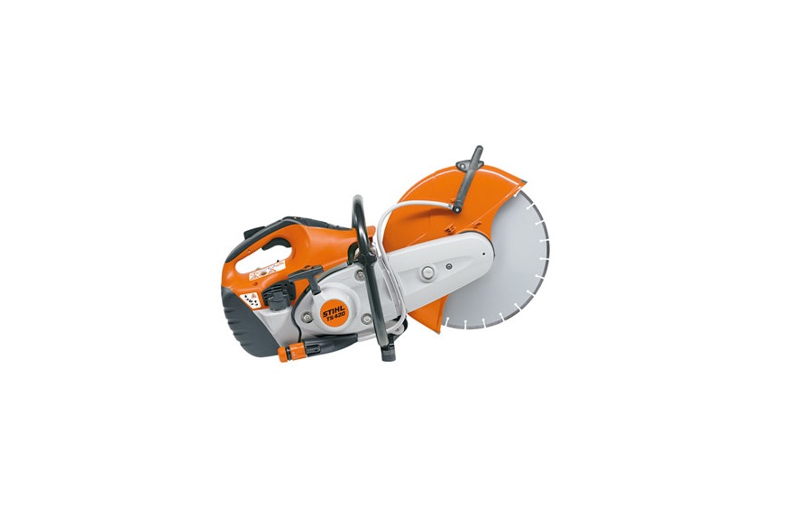
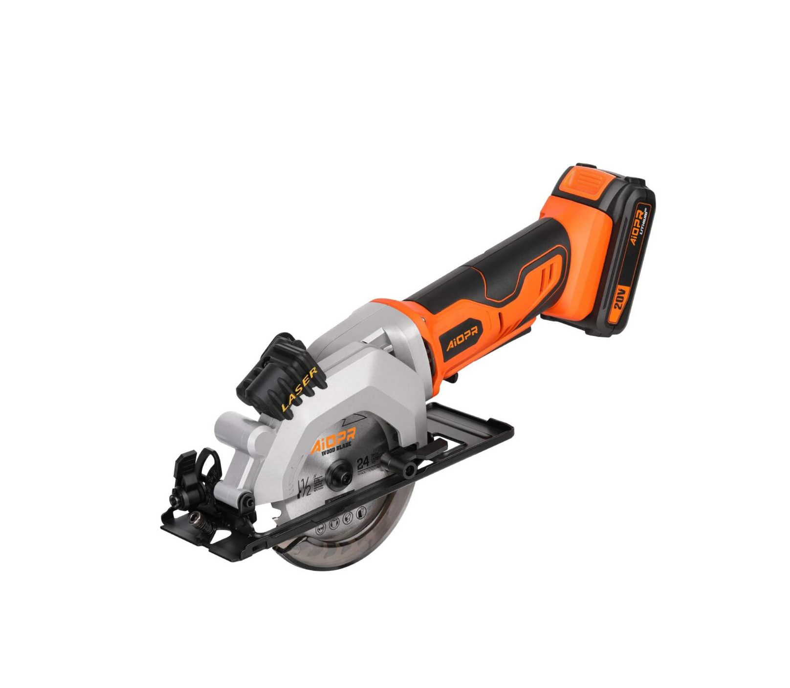
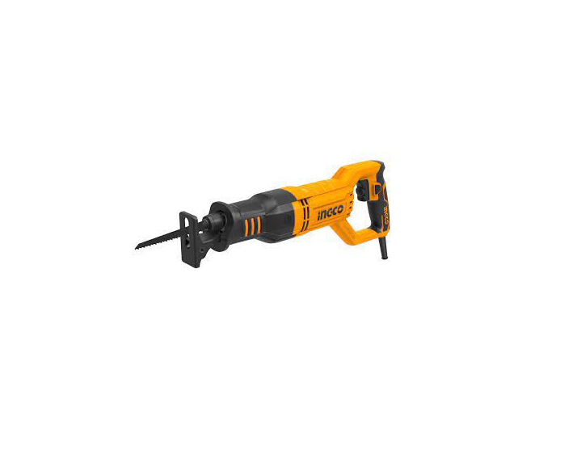

Concrete Jigsaw
A Concrete Saw is an advancement from the regular circular saw we had seen earlier.
It is designed the same way, but a bit larger in size and more powerful.

Cordless Jigsaw
A cordless jigsaw is a small power tool that is used to cut curved lines on a wooden piece
and is also used for curving out complicated and curved lines.

Circular Saw
A circular saw is a power tool that features a toothed disc blade in the middle.
The disc blade rotates on its axis and eventually cuts through the wooden piece you are applying it on.

Reciprocating Saw
Contrary to a jigsaw, a reciprocating saw has a blade at the front of it.
The blade acts the same way as a jigsaw, but the movement of it is back and forth.